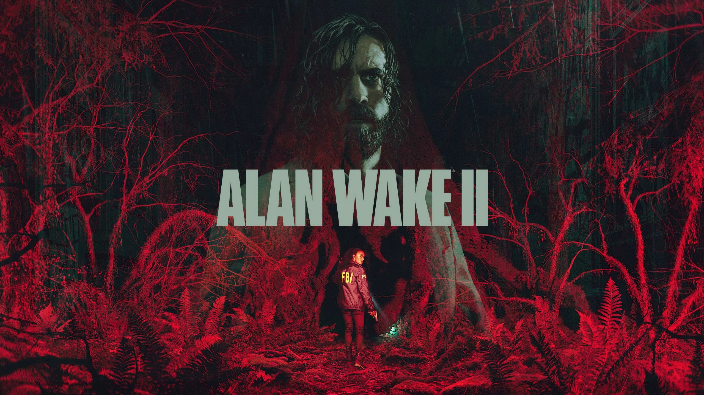
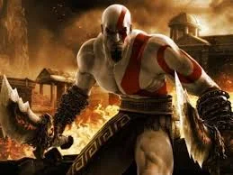
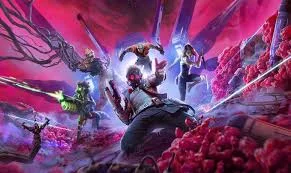

Nota da dica: 5 estrela(s)
Comentarios

darkDark
Que dicas úteis para o jogo do AlanWake!

Crefiso
Dica Monstra <-_->
Zerando Alan Wake II
> Salve frequentemente Apesar de ter um sistema de salvamento automático, dentro do jogo também é possível salvar manualmente nas garrafas de café espalhadas pelo mapa. É indicado até criar múltiplos saves para ter segurança caso algo dê errado, como softlocks, problemas de recursos ou algo do tipo.Visite com frequência o quadro dos personagens Tanto Saga quanto Alan têm seu local específico que resume a trama e avança a narrativa. Ela tem o Quadro de Evidências e ele tem o Quadro de Enredo. Enquanto o de Saga serve para juntar as provas e resumo das recentes descobertas da investigação, o quadro de Alan é utilizado como um dispositivo de mudança no mundo obscuro, alterando a realidade conforme a história encontrada pelos cenários.
Revisite áreas O famoso backtraking também está presente no jogo da Remedy. Com um mundo semiaberto, é essencial que o jogador explore as áreas mais de uma vez. É possível encontrar itens, inimigos e segredos em áreas já conhecidas, quando você as visita em momentos diferentes do jogo.
Faça as cantigas de crianças Existe uma missão secundária em Alan Wake 2 que consiste em achar cantigas de roda, caracterizadas por desenhos infantis no chão, achar seus respectivos bonecos e montar conforme a história contada na canção. Essa atividade está espalhada por toda Cauldron Lake e recompensa o jogador com amuletos que dão bônus especiais.
Não estoque demais Em minha primeira jogatina eu fui cuidadoso até demais e cheguei ao fim do jogo com os depósitos de ambos os protagonistas extremamente lotados. A recomendação é utilizar de forma consistente os itens de ataque, principalmente as granadas e sinalizadores. Os únicos itens que é recomendado fazer um estoque mais específico são os de cura, que podem faltar dependendo da sua habilidade em evitar o perigo.
Lembre-se, cada jogador tem seu próprio ritmo. Então, não se preocupe se demorar um pouco mais. O importante é se divertir! Boa sorte e bom jogo!